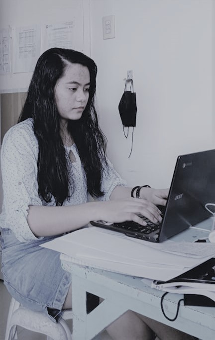

Software Developer
"Don't Let Challenge Stop You To Do the Best Future"
-unknown
I am currently taking up Certificate of Computer Technology, major in Software Developer
at University of San Carlos and at the same time a Passerelles Numeriques scholar. I am currently
struggling this course because I'm not into it but it's quit interesting and exciting.
I am 21 years of
age, I am an elder daughter of my parents and I have a seven siblings. I am currently living in Nasipit Talamban Cebu City.
I'm a risk taker that love discover new things in life.